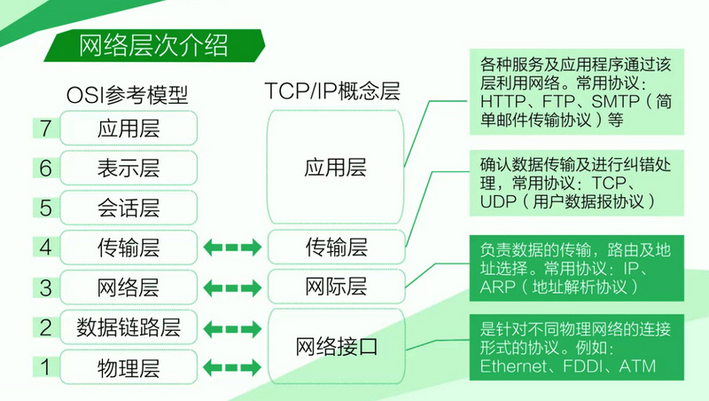

网络

第7层应用层：
OSI中的最高层。为特定类型的网络应用提供了访问OSI环境的手段,处理网络应用。常见的协议有:HTTP，HTTPS，FTP，TELNET，SSH，SMTP，POP3等。
第6层表示层：（数据表示）
主要用于处理两个通信系统中交换信息的表示方式。为上层用户解决用户信息的语法问题。它包括数据格式交换、数据加密与解密、数据压缩与终端类型的转换。 不用协议.
第5层会话层：（互联主机通信）
在两个节点之间建立端连接。为端系统的应用程序之间提供了对话控制机制。此服务包括建立连接是以全双工还是以半双工的方式进行设置，尽管可以在层4中处理双工方式 ；会话层管理登入和注销过程。 不用协议.
第4层传输层：(端到端连接）
常规数据递送;面向连接或无连接。为会话层用户提供一个端到端的可靠、透明和优化的数据传输服务机制。
包括全双工或半双工、流控制和错误恢复服务；传输层把消息分成若干个分组，并在接收端对它们进行重组。不同的分组可以通过不同的连接传送到主机。这样既能获得较高的带宽，又不影响会话层。在建立连接时传输层可以请求服务质量，该服务质量指定可接受的误码率、延迟量、安全性等参数，还可以实现基于端到端的流量控制功能。
协议：TCP • UDP • DCCP • SCTP • RTP • RSVP • PPTP...
第3层网络层：（寻址和最短路径）
本层通过寻址来建立两个节点之间的连接，为源端的运输层送来的分组，选择合适的路由和交换节点，正确无误地按照地址传送给目的端的运输层。它包括通过互连网络来路由和中继数据 ；除了选择路由之外，网络层还负责建立和维护连接，控制网络上的拥塞以及在必要的时候生成计费信息。 协议：IP (IPv4 • IPv6) • ARP • RARP • ICMP • ICMPv6 • IGMP • RIP • OSPF • BGP • IS-IS • IPsec ...
第2层数据链路层：（接入介质）
在此层将数据分帧，并处理流控制。屏蔽物理层，为网络层提供一个数据链路的连接，在一条有可能出差错的物理连接上，进行几乎无差错的数据传输（差错控制）。本层指定拓扑结构并提供硬件寻址。常用设备有网桥、交换机；
协议： 802.11 • 802.16 • Wi-Fi • WiMAX • ATM • DTM • 令牌环 • 以太网 • FDDI • 帧中继 • GPRS • EVDO • HSPA • HDLC • PPP • L2TP • ISDN
第1层物理层：(二进制传输）
处于OSI参考模型的最底层。物理层的主要功能是利用物理传输介质为数据链路层提供物理连接，以便透明的传送比特流。常用设备有（各种物理设备）网卡、集线器、中继器、调制解调器、网线、双绞线、同轴电缆。
协议： RS-443 、RS-232C、RS-485